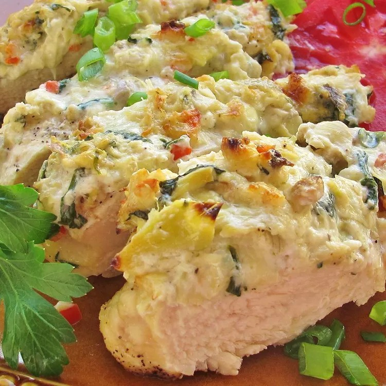

Artichoke Chicken

Description
Artichoke chicken is a delightful meal featuring a lot of flavor and a great amount of
protein. The dinner can be paired with a pasta and veggie, or will be complete by
itself. This meal will certainly make the consumer satiated.
Ingredients
- olive oil
- 1 can artichoke hearts
- 3/4 cup grated parmesan cheese
- 3/4 cup mayonnaise
- 4 boneless, skinless chicken breasts
Steps
- Preheat oven to 350 degrees F. Grease baking dish with the olive oil.
- Mix together artichoke hearts, parmesan cheese, and mayonnaise.
- Add chicken to baking dish, and add mixture on the top of the chicken.
- Bake uncovered for 30 minutes.